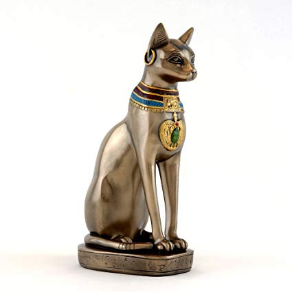

Cats are one of the most popular pets. They are a small and furry mammal. Cast are carnivorous. They walk on four legs and have a long tail. They have sharp teeth and claws to kill their prey in the wild. Cats are able to live in the wild and outdoors on their own as they are very talented hunters. They have been domesticated and kept as pets for a very long time, and make great companions.
Cats were domesticated approximately 4,000 years ago by the ancient Egyptians. They were first used as pest control to protect food. They were worshipped as gods and goddesses. They, specifically black cats, are sometimes seen as bad luck. This came from a short period of time in the Middle Ages when cats were associated with the devil.
Cats are my favorite animals. They are much better than dogs. First, they are very low maintenance. You do not have to take them outside for walks or to use the bathroom, they take care of that themselves. Cats will leave you alone when they want, but also give you love when you need it. It is nice to have a little animal wandering around keeping you company all the time.